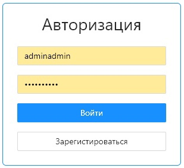
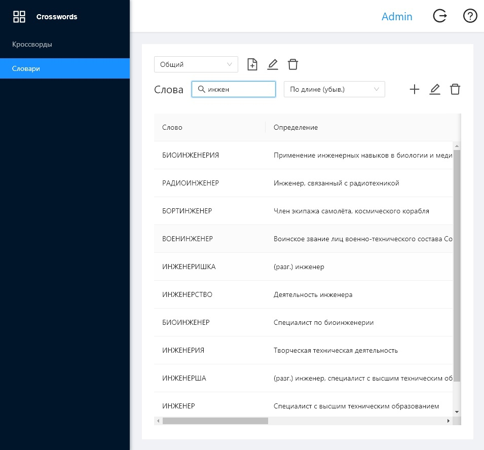
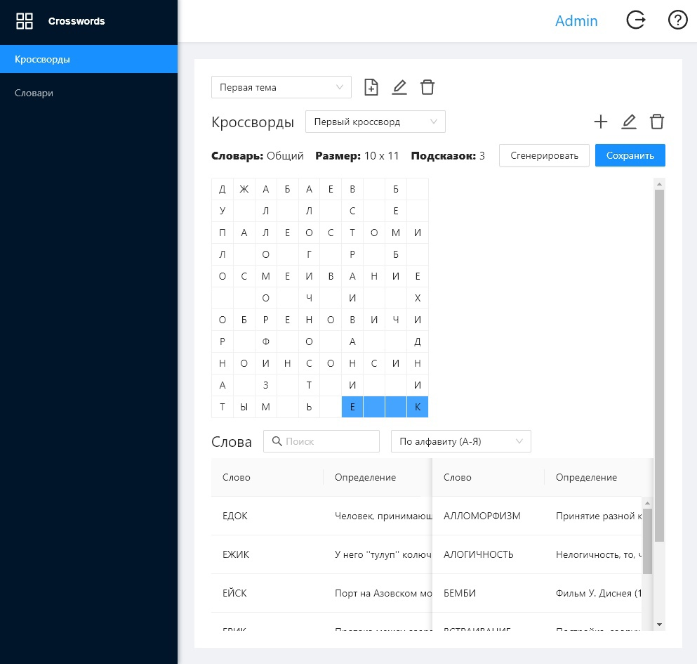
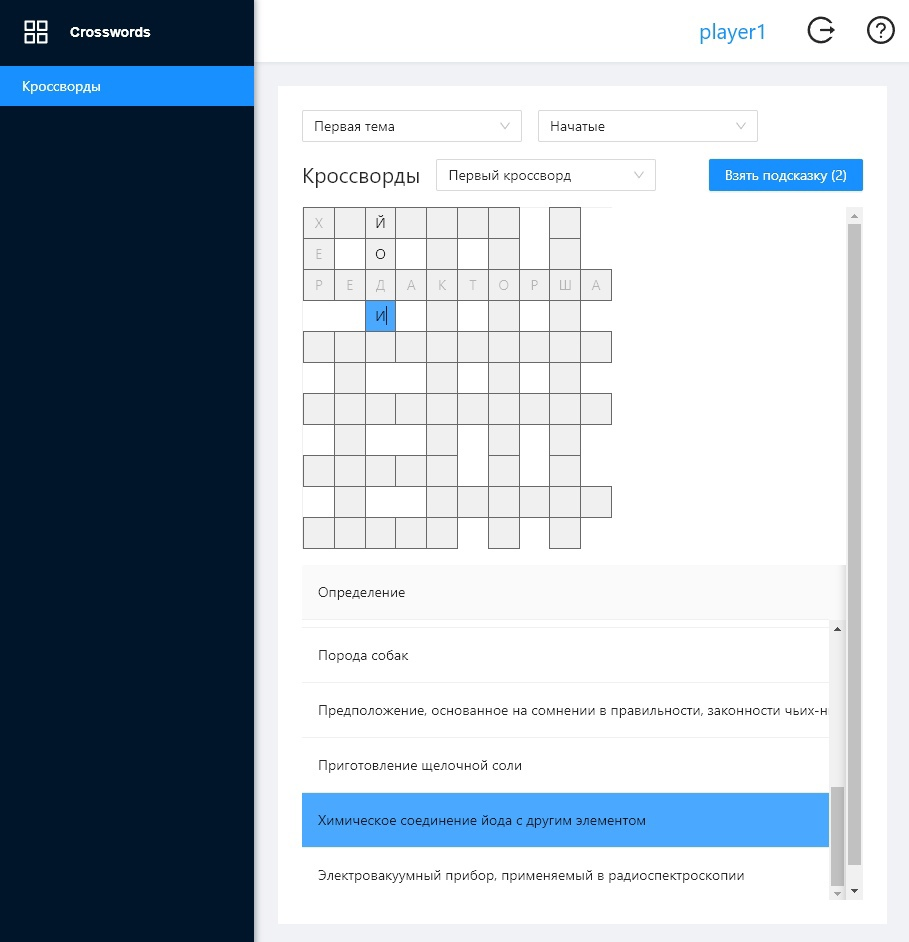

Считается, что первые кроссворды составляли еще в древности в виде разнообразных
буквенных головоломок. Популярность кроссворд обрел в начале 20 в. США, Великобритания
и ЮАР конкурируют в праве быть родиной словесной головоломки. Врачи рекомендуют разгадывать
кроссворды и сканворды для того, чтобы снять стресс. Кроссворды успешно используют учителя,
когда объясняют новую тему или закрепляют знания по пройденному материалу.
Таким образом, можно интересно усваивать знания в виде игры, и атмосфера на уроке становится
непринужденной. Работа с кроссвордами позволяет людям оттачивать грамотность и сообразительность.
Данная программная система включает в себя две роли: администратор и игрок.
На рисунке 1 приведена экранная форма авторизации, на которой пользователь в
зависимости от введенных данных сможет зайти за одну из ролей. Для того,
чтобы зарегистрироваться в системе необходимо ввести логин и пароль и нажать кнопку "Зарегистрироваться"

Рисунок 1 – Экранная форма авторизации
Функции администратора:
авторизация в системе;
настройка параметров кроссворда при создании:
- задание количества клеток по горизонтали;
- задание количества клеток по вертикали;
- задание количества букв в пересечении;
- подключение словаря понятий;
- выбор способа создания кроссворда;
составление/редактирование кроссворда:
- добавление слова;
- удаление слова;
сохранение кроссворда в базу данных;
загрузка кроссворда из базы данных;
работа со словарями понятий:
- добавление понятия;
- удаление понятия;
- изменение понятия;
- выбор критерия сортировки словаря;
- поиск слов по маске;
- сохранение словаря из файла;
- создание нового словаря понятий;
Функции игрока:
регистрация/авторизация пользователя в системе;
загрузка кроссворда из БД;
разгадывание кроссворда с организацией системы подсказок:
- выбор слова на сетке;
- вписывание/удаление/изменение буквы;
- взятие подсказки;
сохранение кроссворда в БД;
просмотр справочной информации.
После нажатия на кнопку «Войти» в случае корректно введенных данных
откроется экранная форма главного меню администратора (см. рисунки 3, 7), либо
игрока (см. рисунок 10).
На рисунке 3 приведена страница главного меню администратора (раздел словари).
На данной странице находятся кнопки для создания нового словаря понятий, загрузки словаря
понятий из файла и редактирования словаря понятий, а также его удаления. Администратор может
как создать новый словарь, введя слова и их определения (рисунок 4), так и добавить существующий
словарь, загрузив его (рисунок 5). Помимо этого администратор может изменить слово (рисунок 6).
Также у администратора присутствует возможность поиска и сортировки слов.

Рисунок 3 – Экранная форма главного меню администратора (раздел словари)
На рисунке 4 приведено окно добавления слова в словарь.
Администратор должен ввести слово и его определение и нажать кнопку "Сохранить".
Рисунок 4 – Добавление слова в словарь
На рисунке 5 приведено окно загрузки словаря из файла.
Администратор может выбрать файл из системы и нажать кнопку "Сохранить".

Рисунок 5 – Добавление словаря
На рисунке 6 приведено окно изменения слова.
Администратор ввести новое название для определения и нажать "Сохранить".

Рисунок 6 – Изменение слова
На рисунке 7 приведена страница главного меню администратора (режим кроссворды).
Для создания кроссворда необходимо ввести название, выбрать тему, выбрать словарь
и задать размер сетки (рисунок 8). При составлении кроссворда администратор может добавлять
слова на сетку из списка и удалить их из неё двойным нажатием на слово.
Также администратор может выполнять поиск слов и их сортировку. При создании кроссворда
администратор может нажать на кнопку "Сгенерировать". Также администратор имеет возможность
удалить или отредактировать ранее созданный кроссворд. Помимо работы с кроссвордами
администратор может добавлять новые темы (рисунок 9).

Рисунок 7 – Экранная форма главного меню менеджера

Рисунок 8 – Задание параметров кроссворда для автоматической генерации
На рисунке 9 приведено окно добавления темы.
Администратор должен ввести название темы и нажать кнопку "Сохранить".

Рисунок 9 – Добавление темы
На рисунке 10 приведена страница разгадывания кроссворда.
Пользователь выбирает тему, начатый или не начатый кроссворд, выбирает кроссворд.
Затем пользователь кликает по ячейке и вводит букву. После выбора ячейки синим
цветом выделяются связанные с определением ячейки. Пользователь может выбрать ячейку
и взять подсказку, тогда в ячейку подставится буква. После каждого редактирования ячейки,
происходит акт сохранения.

Рисунок 10 – Страница разгадывания кроссворда
Система составления и разгадывания классического кроссворда.
20.12.2021
Copyright © Шамин Евгений, Яцкевич Дмитрий, Паньшин Арсений, Ахмадиев Ильдар.
Система составления и разгадывания классического кроссворда не является свободно распространяемой программой.